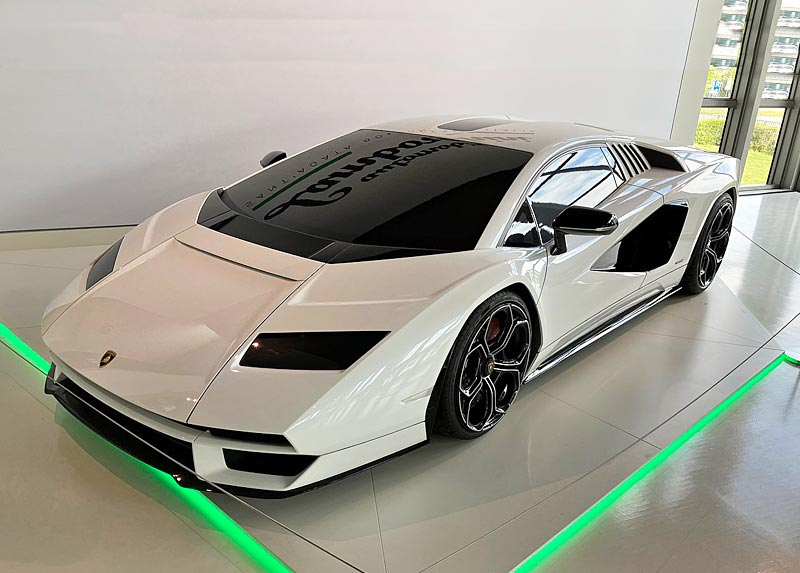

Bienvenue dans le domaine de la haute performance sur roue. La Lamborghini Countach 2021 incarne l'essence audacieuse et iconique de son prédécesseur légendaire. Avec ses lignes angulaires et sa silhouette basse et large, elle marque une nouvelle ère de design automobile futuriste. Propulsée par un moteur V12 rugissant, elle offre une expérience de conduite exaltante, propulsant les passionnés à des vitesses vertigineuses tout en captivant les regards avec son allure sculpturale et ses portes papillon emblématiques. La Countach 2021 reste fidèle à son héritage en combinant performance extrême et esthétique avant-gardiste, affirmant ainsi sa place dans l'histoire des supercars.
lamborghini countach  Contact